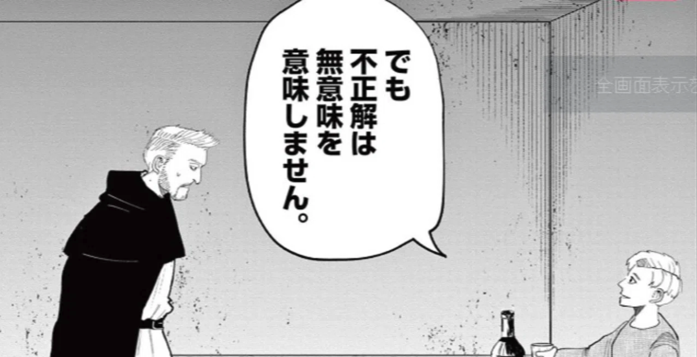
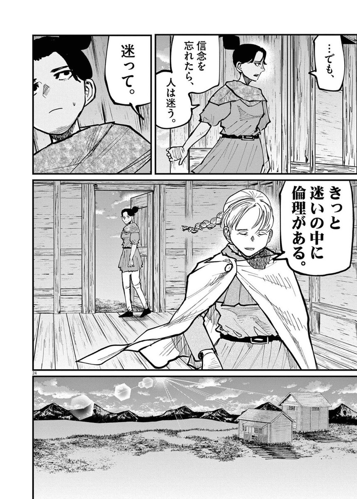

履歴への愛としての組織設計
同じ正論なのに、入る正論と入らない正論がある。
1. 違和感
論理に穴がない。スライドはきれいに作り込まれている。なのに、その言葉だけがチームに入ってこない瞬間がある。
反論する材料はない。むしろ、その通りだと思う。でも、何かが詰まる感覚が残る。「いや、でも、それはちょっと……」と言いかけて、自分でも何を留保したいのか分からなくなる。
この違和感は、おそらく多くの組織で繰り返されている。長くその組織にいる人が、新しく入ってきた人の "正しい" 提案に、説明できない抵抗を示す。古参主義と切って捨てれば話は早い。けれど本当にそれだけだろうか。何か観測されていないものが、そこにあるのではないか。
僕にとって、この違和感の正体は、いつも同じ場所に着地する気がする。
履歴だ。
2. 履歴を読まない正論
正論には二種類ある、と言ってみる。
ひとつは、履歴を読んだ上での正論。なぜ今の構造がこの形をしているか、どんな制約のもとで成立したか、どんな失敗が積層しているかを観測した上で、それでもなお別の形が良いのではないか、と差し出される提案。
もうひとつは、履歴を読まない正論。「普通こうするでしょ」「ベストプラクティスはこうです」「外ではこうやっています」。一般論として正しい。けれど、目の前の構造がなぜこの形になったかを一切問わずに置かれる。
僕が違和感を覚えるのは、いつも後者だけだ。
前者は、たとえ結論が今と真逆でも、ちゃんと聴ける。同じ景色を見た上で、別の山頂を提案してくれているからだ。背景にあるのは観測であって、テンプレートの貼り付けではない。
後者には、観測がない。代わりに「正解の輸入」がある。誰かの組織で機能した解、誰かの本に書いてあった解、誰かのカンファレンス登壇で提示された解を、目の前のコンテキストにそのまま転写してくる。
ここで起きているのは、正論の問題ではなく、知性の方向の問題ではないだろうか。
履歴を観測しない知性は、いくら高くてもコンテキストに着地しない。逆に履歴を観測する知性は、結論が一見「普通」でなくても、その組織の中では強い意味を持つ。
正論を拒絶しているのではない。履歴を観測しない知性のあり方に、留保を置きたい。そう問い直してみると、自分の違和感の輪郭が少し見えてくる。
3. 組織・コード・共同体には履歴がある
構造には、必ず理由がある。
なぜこのモジュールがこの形をしているか。なぜこのチームがこの編成になっているか。なぜこの評価制度がこの設計になっているか。
理由は、最初の意図だけにあるのではない。間に挟まった失敗、撤退、復旧、妥協、その全部が今の形を支えている。設計の意図と、運用上の事故と、政治的な制約と、誰かが折れた瞬間と、誰かが諦めた瞬間。それらが地層のように積み重なって、今の構造を成立させている。
地層を見ずに地表だけを評価すれば、たいてい誤読する。
「このアーキテクチャは古い」と一言で済ませる時、その下にどれだけの探索の堆積があるか、観測されていないことが多い。なぜこの形に落ち着いたのか、何度別の形を試して戻ってきたのか、どんな限界に当たったのか。観測されないまま、地表だけが評価される。
これは、コードだけの話ではない。組織の制度も、チームの慣習も、共同体のルールも、同じ構造を持つ気がする。今そこにあるものは、誰かの探索の最終地点だ。最終地点だけを見て、その手前の道筋を読まないなら、それは観測したことにならないのではないか。
履歴を読むとは、地表ではなく地層を見る、という姿勢のことかもしれない。
4. 不正解は無意味ではない —— 迷いの中に倫理がある
ここから派生して、もう一つ問いたいことがある。
「最初から正解だけを選べばいい」という思想に、僕はいつも引っかかる。
この引っかかりは、もともと自分の中にあった違和感だ。けれど、それを言葉に整理する手がかりを置いてくれたのは、魚豊『チ。―地球の運動について―』だった。あの作品は、地動説を信じた人々が、証明し切れないまま命を落とし、それでもなお次の世代に断片を渡し続けた物語だ。彼らの観測は、当時の基準では「不正解」だった。証明されないままに殺された。けれど、その積層が次の人に渡り、別の人に渡り、最終的には世界の見え方そのものが変わった。
作中の、ある人物のセリフが、ずっと残っている。
でも、不正解は、無意味を意味しません。
—— 魚豊『チ。―地球の運動について―』(小学館)

不正解だった瞬間も含めて、観測の堆積は意味を持ち続けた。
正解だけを選ぶ思想は、効率的に見える。寄り道がない。失敗がない。直線で答えに着く。しかしそれは、探索を犠牲にして初めて成立する効率ではないだろうか。
探索とは、不正解を踏むことを含んだ運動だ。試して、外して、戻って、また試す。その全部が観測になる。「ここではないと分かった」もまた、共同体にとっての地図になる。
そして、チ。の中で、もう一つ強く残ったセリフがある。
……でも、信念を忘れたら、人は迷う。
迷って。
きっと迷いの中に倫理がある。
—— 魚豊『チ。―地球の運動について―』(小学館)

迷いの中に倫理がある —— このセリフに触れた時、長く言葉にならなかった感覚が、ようやくどこかに座った気がした。
正解を最初から持っている人には、倫理はあまり要らないのかもしれない。判断が答え合わせに過ぎなくなるからだ。倫理が立ち上がるのは、答えが分からない瞬間 —— 観測がまだ不十分で、自分の判断にリスクを引き受けないといけない瞬間だ。
迷いがない判断は、しばしば誰かのテンプレートに従っているだけだ。迷いを通過した判断には、その人の責任が乗っている。倫理は、迷いの末にしか宿らないのではないだろうか。
だから、不正解を踏むことを許さない組織は、倫理が育ちにくい組織でもある気がする。皆が「正解」を輸入してくる限り、誰も自分の判断にリスクを引き受けない。誰も迷わないから、誰の判断にも責任が宿らない。
不正解は無意味ではない。
迷いも無意味ではない。
むしろ、その後の正解と倫理を支える基盤として、無くてはならない観測の堆積だ。
正解だけを抽出して輸入する組織は、観測の経路を失う。同じ正解が別のコンテキストで通用しない時に、戻る場所がない。どこを通って今ここに来たかを、自分の身体には記録していないからだ。
「うちは試行錯誤に時間をかけない」と誇る組織を、時々見かける。ベストプラクティスを早く取り入れる、というプライドの裏返しでもある。それは確かに効率的に見える。けれど、その組織が次に直面する未知の問題に対して、自前で探索できる筋肉と、自前で迷う倫理が育っているかどうかは、また別の話だ。
探索を畳んだ組織は、外から正解が降ってこない瞬間に、止まる。そして、迷いを畳んだ組織は、倫理の出どころを失う。
不正解を許す共同体は、観測可能性を保ち続ける共同体でもある気がする。そして、倫理を保ち続ける共同体でもある。
5. 継承を伴う置き換え
ここまで書くと、「では既存の構造に手を入れてはいけないのか」という反問が来そうだ。そうではない。
僕自身、何度か構造を置き換える側に立ってきた。アーキテクチャを刷新したり、評価制度を再設計したり、チーム編成を組み替えたり。改革は必要なときがある。
問題は、改革そのものではなく、改革の作法だと思っている。
長く実践してきたのは、継承を伴う置き換えという姿勢だ。
- 既存の構造の合理性を、まず読む
- なぜこの形になったか、の履歴を辿る
- 当時の制約と当時の最適解を、自分の中で再演する
- そこに混ざっている熱量を観測する
- その上で、置き換えるべき部分と、保つべき部分を切り分ける
- 置き換えのリスクを、自分で負う
これは、単なる破壊者ではない。継承者としての改革者、と言ってみてもいいかもしれない。
継承者としての改革者は、過去を否定しない。過去の延長線上に新しい構造を置く。前の人の積み上げが、新しい構造の土台にちゃんと組み込まれていること。それを改革の前提条件にする。
逆に、継承なき改革は、しばしば履歴を否定する。「これは古い」「これは間違っていた」「ベストプラクティスではない」。言葉として強い。けれど、その言葉が出た瞬間、過去にそこにいた人の熱量が共同体から消えていく。共同体の地層が一枚、外から剥ぎ取られる。
熱量は、人が去った後にも積層として残るものだ。継承を伴う置き換えは、その積層に新しい層を重ねる作業だ。継承なき改革は、地層をいったん更地に戻す作業だ。
どちらも「変えた」という結果だけ見れば、同じに見える。けれど、共同体の中での意味は、たぶん全く違う。
6. 愛としての履歴
ここから一段、抽象に上がる。
愛とは何か、という問いを、長らく内側で温めてきて、最近、輪郭が少し定まった気がする。
愛とは、履歴を引き受けることだ。
対象が何であってもいい。チーム、プロダクト、コード、組織、共同体、人。その対象が今ここにあるまでに、誰がどんな熱量を積み上げ、どんな失敗を踏み、どんな迷いの末に今の形に辿り着いたか。それを覚えていること。尊重すること。継承すること。
「好き」と「愛」は、しばしば分けて使われない。けれど、僕にとっては、両者はかなり違う作動原理を持っている気がする。
好きは、対象の今を肯定する。
愛は、対象の履歴を引き受ける。
好きは瞬間でも成立するが、愛は時間軸を必要とする。誰が積み上げたか、なぜそうなったか、どんな探索が裏にあったか。観測されない瞬間に、愛は薄まる。
逆に、不誠実とは何か。
履歴を観測しないこと。文脈を読まないこと。誰がそこにいたかを覚えていないこと。共同体の地層に無関心であること。
これは個人的な感情ではなく、観測の問題として書いている。誰かを傷つけたかどうかではなく、共同体の履歴を観測装置から外したかどうか。
ただし、ここで自分の危うさにも触れておきたい。
履歴への愛が強くなると、副作用が出てくる。これは自覚しておかないと、自分が一番嫌っていたものに、自分が変質する。
- 古参主義に転びやすい
- 履歴を共有していない人を、心の中で軽く見やすい
- 「これくらい理解して当然」と暗黙化しやすい
- 共有されていると思っていた履歴が崩れた時、説明を諦めて理解者だけで閉じたくなる
特に最後のものが、僕にとって最も怖いパターンだ。
「同じ景色を見ている前提」で深く考える癖があるから、その前提が崩れた瞬間、強い孤独が来る。意見が違うどころか、観測してきた宇宙そのものが共有されていなかった、と気づく時がある。
そういう時、しばしば、説明を諦めかける。「もう分かってもらわなくていい」と内側で線を引きそうになる。
しかしこれをやると、共同体は閉じる。閉じた共同体の履歴は、外からは観測できなくなる。新しい人が入ってきても、地層が見えない。結果として、自分が最も嫌っていた「履歴を読めない知性」を、共同体の側が再生産することになる。
履歴への愛は、内輪化に転がりやすい。だからこそ、履歴を観測可能な形で外に置く設計が要る。愛を内側に閉じ込めないための、構造の側の仕事だ。
7. OrbitLens へ
ここまで来て、ようやく、OrbitLens という試みの動機を置ける気がする。
OrbitLens は、機能のリストではない。少なくとも、僕にとっては。
ツール、と言うと機能の話に閉じてしまう。OrbitLens の根底にあるのは、履歴を観測可能な形で共同体に残すという思想だ。
EIS が git log と git blame だけで7軸を観測するのも、現在開発中の SaaS『OrbitLens Ace』が時系列で構造の物語を辿ろうとしているのも、根は同じ場所にある。誰がどんな熱量で何を積み上げたか、それを地表ではなく地層として観測可能にすること。
なぜそうしたいか。
正論が組織を壊す瞬間を、何度も見てきたからだ。履歴を観測しない知性が、共同体の地層を一枚ずつ剥ぎ取っていく瞬間を、何度も見てきた。その逆も見てきた。観測される共同体は、強い。観測されない共同体は、人が去った瞬間に履歴ごと消える。
もう少し人の輪郭で言うなら、ある種のおもろい人の熱を、消したくないのだと思う。
履歴を読む人。安易な「正解」に飛びつかず、自分の中で迷う人。迷いながら、それでもリスクを自分で引き受けて、自分の足で真理に向き合おうとする人。誰かの積み上げに、ちゃんと敬意を払える人。そういう人がチームに数人いるだけで、共同体は別の温度を持つ。
ただ、こういう人の仕事は、見えにくい。声が大きいわけでもない。スライドが派手なわけでもない。地表ではなく地層を耕している人の貢献は、評価制度の網からこぼれ落ちやすい。
そして、こういう人ほど、疲れる。履歴を観測しない知性が組織を「最適化」してしまった時、最初に熱が抜けていくのは、たいてい彼らだからだ。「もう、いいや」と内側で線が引かれた瞬間、共同体から一番大事な層が、静かに抜けていく。
けれど、この「もう、いいや」は、構造の側で防げる種類のものだと思っている。
熱は、最初は個人の中で生まれる。生まれた瞬間に、共同体の側でちゃんと観測されること。観測された熱が、別の誰かに伝播していくこと。伝播の先で、新しい熱がまた生まれること。この循環が構造の側で組まれていれば、共同体の熱量は保存される。
生まれた熱を保存し、伝播させ、次の熱の生成を絶やさない。組織設計の中核にある仕事は、たぶん、ここだ。
OrbitLens は、その循環の最初の一歩 —— 誰かの熱量を地層として観測可能にするための装置だ、と言ってもいいかもしれない。
熱量の保存。履歴の可視化。時間軸の回復。共同体の観測可能性の維持。
派手な言葉ではない。けれど、組織設計の根底に必要なものは、たぶんこれくらいシンプルな原理だと、最近思う。
愛とは、履歴を引き受けることだ。
組織設計とは、その愛を観測可能な形に置く設計のことかもしれない。
正論に反対しているのではない。履歴を観測しない知性に、もう一度、問いを置きたい。
「あなたの正論は、誰の積み上げの上に、何を継承して立っているだろうか」と。
本記事は魚豊『チ。―地球の運動について―』(小学館) からの問いを含みます。
OrbitLens / machuz